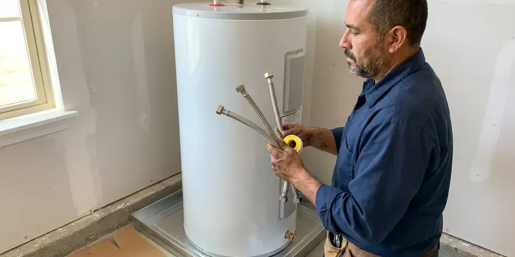
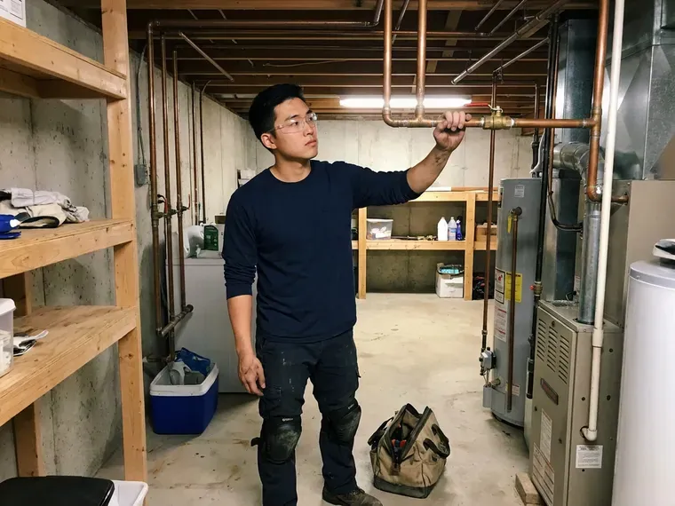
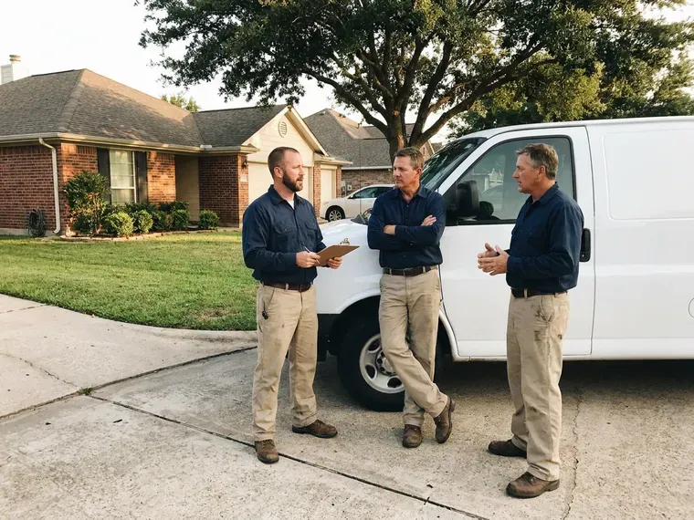

Water Heater Expansion Tank Installation in Keene, NH
Dripping relief valve in Keene, NH? FVR Plumbing checks the pressure and sizes a tank to fix it.
- Same-Day Installs
- Written Prices Up Front
- Same-Day Installation Available
- Licensed Plumbers

Protect Your Tank and Fixtures With an Expansion Tank in Keene, NH
Call now and we will check your pressure, size the right tank and install it the same day in most cases.
Thermal Expansion Tank Installation for Keene, NH Water Heaters
FVR Plumbing puts expansion tanks on closed systems, where pressure has no way back to the main. A PRV, a check valve or a backflow device creates that closed loop, and once it exists, the water heater needs a place for expanded water or it will push the relief valve open. The relief valve starts to drip.
Work we handle every week:
- Air precharge set to your house pressure
- Code-compliant tank mounting
- Strapping and bracket support for the tank

Additional Plumbing Installation Services in Keene, NH
We install water heaters, pumps, lines, and fixtures across Keene, NH with careful, permitted work that passes inspection the first time.



Keene water heater installation specialists



Customers
Why Choose FVR Plumbing for Water Heater Expansion Tank Installation in Keene, NH?
Thermal expansion on a closed system can push house pressure past 150 psi. At that point the T and P valve lets go, and before it gets there, the high pressure is already working on supply lines, toilet fill valves and faucet cartridges throughout the house. That is where drips begin.
- Extended Lifespan, Fewer pressure spikes add years to the heater.
- Prevent Leaks, Lower peak pressure cuts the risk of leaks and bursts.
- Code Compliance, Many local codes require a tank on new heaters in closed systems.
Citywide Coverage
Townhomes, condos and light commercial buildings across Keene get the same service as single-family homes. We size for the heater and the building, and for shared mechanical rooms we coordinate access with the property manager so nobody waits around. Scheduling is flexible.
Experienced Team
The team understands how PRVs, check valves and backflow devices create closed systems. They can trace a dripping relief valve to its cause quickly, and sometimes the fix is a tank, sometimes a PRV, and sometimes both, which they explain before doing any work. You decide after the diagnosis.
Safety-First Approach
Safety starts with relieving the pressure before we open anything. We shut off the water and drain down the line, set the precharge on the dry tank, install it per the manufacturer guidelines and local codes in Keene, NH, and then bring the system back up slowly. We refill gradually.
Trusted Certified Keene Plumbing Services Professionals
At FVR Plumbing, we are proud to offer certified plumbing services throughout Keene, NH. Those papers on the wall mean something. Every repair, install and maintenance visit follows strict safety and quality rules, and the plumbers doing the work carry recognized industry credentials.
Call Us Now PHCC Plumbing Contractor Recognition
PHCC Plumbing Contractor Recognition Better Business Bureau (BBB) Accreditation
Better Business Bureau (BBB) Accreditation Angi Certified Pro
Angi Certified Pro ISO 9001 Quality Management Certification
ISO 9001 Quality Management CertificationWater Heater Expansion Tank Installation Services in Keene, NH
Preventing Water Heater Damage in Keene
Pressure swings wear out water heaters early. Every cycle without an expansion tank spikes the pressure in the tank and the pipes, stressing the welds, the fittings and the relief valve, and a lot of heaters we replace in Keene died from that stress years before their time. A small tank prevents it.

Commercial Expansion Tank Installation in Keene, NH
Restaurants and laundromats run big water heaters hard all day. We install commercial-grade tanks sized for the volume, follow commercial plumbing code on support and placement, and work around your hours so the kitchen or the machines in Keene, NH keep running. Heavy tanks get floor stands.
Residential Expansion Tank Services in Keene
Two gallons of tank covers most 40 and 50 gallon heaters at normal house pressure. We pick the size from the manufacturer chart, using your heater's capacity, your static pressure and your temperature setting, because a tank that is too small over-flexes its diaphragm and fails early in Keene homes. Bigger is not always needed.
Commercial and Multi-Unit Expansion Tanks in Keene
Apartment buildings and offices with several heaters need tanks sized for the whole hot water system. Storage tanks and recirc loops get counted in the sizing, floor-mount the larger tanks with proper supports, and plan the work to keep hot water interruptions short for tenants in Keene, NH. Weekend work is available.
Pressure Reducing Valve and Expansion Tank Pairing in Keene
Pressure reducing valves are common, and they protect fixtures from high street pressure. They also turn your plumbing into a closed system, so we test the PRV output, replace it if it is creeping, and pair it with a correctly charged expansion tank so pressure stays steady throughout the house in Keene. Old PRVs often creep up.
Code-Compliant Installations in Keene, NH
Water heater replacements, new fixtures and sewer or water line work generally need a permit where the town enforces a code. Local plumbing codes often require an expansion tank whenever a backflow device or PRV creates a closed system. We follow the local rule and pull permits when they apply, so the work passes inspection in Keene, NH and nothing comes back to bite you when the house sells. It helps if you ever file a claim.
Amtrol Expansion Tank Services in Keene
Amtrol's Therm-X-Trol tanks use a butyl diaphragm inside a steel shell with a lined water chamber. The model gets matched to your heater size and pressure, mount it on the cold supply, and set the precharge before water goes into the tank, since you cannot adjust the air side properly once the system is full in Keene. Order matters on this job.

Expansion Tank for Tankless Water Heaters in Keene, NH
Recirculation pumps keep hot water in the lines, which means more heated water and more expansion. On tankless systems with a recirc loop, we often add a small tank, especially in Keene, NH homes with a PRV or a meter check valve that already closed the system. No tank goes in without a reason.
Expansion Tank Installers Near You in Keene, NH
Relief valve dripping and searching for help nearby? Call us before buying a new water heater, because a quick pressure test tells us right away whether thermal expansion is the cause, and a tank costs far less than a new heater. The test is fast.
Local plumbing systems are what we know best. The same regulators and meter setups show up every week, so we know how they behave and can size your expansion tank and set the charge correctly on the first try in Keene. No return visit needed.
FVR Plumbing at a Glance
- Fully licensed plumbing team covering Keene, NH
- 24/7 emergency service with same-day scheduling
- Clear written estimates, no hidden fees
- 4.9-star rated by 840+ New Hampshire customers
Keene Map
Keene Information
- Population
- 22,917
- Area codes
- Local
- Service area
- Keene and communities within 40 miles
- Nearby
- Claremont, Concord, Manchester, Nashua
High incoming water pressure and widespread pressure regulators make thermal expansion a real issue for water heaters in Keene, NH, and a properly charged expansion tank keeps that pressure under control.
Expert Services
Call FVR Plumbing for reliable plumbing work done by licensed pros in Keene, NH.
Our Specialized Plumbing Services in Keene, NH
At FVR Plumbing, we handle the full list of plumbing services across Keene, NH. We go from leak detection all the way to full system installations, for homes and commercial buildings, and we do it quickly at a fair price. Here are the core services we offer:


What an Expansion Tank Install Looks Like in Keene, NH
Every expansion tank job in Keene follows the same order.
Request a Quote
Call (844) 442-1569 or use the online form. We talk through the job and give you an upfront estimate.
On-Site Assessment
A plumber looks at your Keene heater and plumbing to size and place the tank.
Professional Installation
We install the tank to local New Hampshire code and manufacturer specs, supported and leak free.
Frequently Asked Questions About Water Heater Expansion Tank Installation in Keene
Residential expansion tank installs usually cost $250 to $550 with the tank and labor. Attic installs, larger tanks or a new PRV can bring it to $600 to $1,000.
A handy homeowner can do it, but the tank has to be sized, precharged to your exact pressure and properly supported. Mistakes lead to early failure or leaks, so most people have a plumber do it.
A dripping T and P valve on the water heater is the most common symptom. Pressure that swings up and down is another, and a waterlogged tank sounds dull all the way up when you tap it and feels heavy, which means the diaphragm has failed. At that point it gets replaced.
Five to ten years is typical. High pressure and hard water cut that short, so we check tanks during water heater service.
Watts, Amtrol and Zurn are the brands we install most. Each one makes potable tanks that hold a charge well, and our plumbers pick the model by your heater size and pressure, then explain why before installing anything. Potable rating is a must.
Probably, if your home has a PRV, a check valve or a backflow preventer on the main. Those create a closed system that needs a tank, and plenty of local codes require it whenever a water heater is installed.
Our usual picks are Watts, Amtrol and Z-Flex. All are potable rated and hold their air charge, and our plumbers stock the common sizes so most jobs finish on the first visit without a trip to the supply house. We carry 2 and 4.5 gallon tanks.
Permit rules vary in Keene, and they often depend on whether the tank goes in with a new water heater. Standalone tanks usually do not need one, but we check the local rules and advise you before work starts, and when it is part of a heater replacement the permit covers both. Permits are on us.
What Our Customers Say About Our Plumbing Experts

Kevin O.
Before buying our house I paid for a sewer camera inspection. FVR Plumbing found a belly in the line that held standing water about forty feet from the cleanout. We used the video to get the sellers to fix it before closing.
Sewer Camera Inspection · Concord, NHRobert G.
The camera showed a full break in our clay sewer line near the street. FVR Plumbing replaced it with a trenchless pipe burst, so the only digging was two small pits in the yard. They let us watch the footage before and after.
Sewer Line Replacement · Manchester, NH
Emily R.
The shutoff valve under our kitchen sink snapped off in my hand on a Sunday morning. FVR Plumbing had someone out by early afternoon. He replaced both angle stops with quarter turn valves and showed me where our main shutoff was, which I honestly did not know.
Plumbing Repair · Claremont, NH
Paul B.
Our pit pump ran nonstop even in dry weather. The plumber found the check valve was stuck open, so the same water kept cycling back into the pit. New valve, new float switch, done in an hour. It runs quiet now.
Sump Pump · Claremont, NHLisa C.
Water was pouring out from under the washing machine on a holiday weekend. FVR Plumbing talked me through closing the valves over the phone and had a plumber at the house within ninety minutes. It was a burst fill hose.
Emergency Plumbing · Londonderry, NH
Karen W.
After our third pinhole leak in copper, we stopped patching. FVR Plumbing gave us a written plan room by room and repiped the house in PEX while we stayed in it. The crew covered our floors every morning and cleaned up every night.
Repiping · Concord, NH